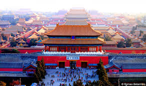
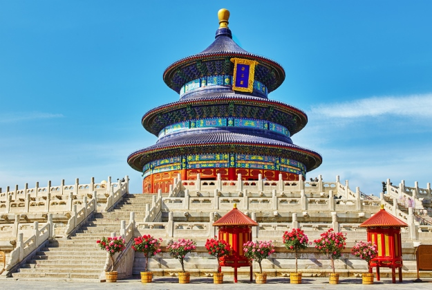
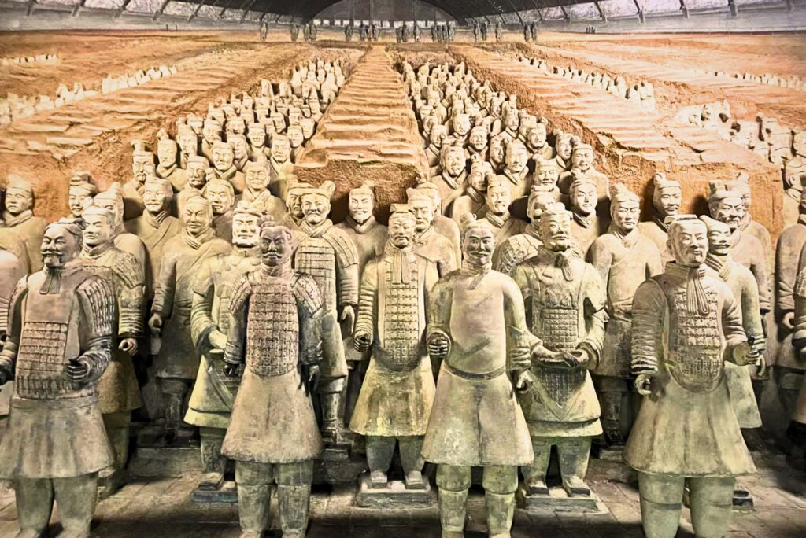

Great Wall of China

The Great Wall of China, 万里长城, literally "ten thousand li long wall") is a series of fortifications in China. They were built across the historical northern borders of ancient Chinese states and Imperial China as protection against various nomadic groups from the Eurasian Steppe.
Forbidden City
The Forbidden City in Beijing, China, is a vast imperial palace complex, once home to Chinese emperors for nearly 500 years (Ming & Qing Dynasties), known for its stunning traditional Chinese architecture, symbolic design (yellow roofs, red walls, dragon motifs), and vast scale with over 90 palace compounds and nearly 1000 buildings. It's called "Forbidden" because ordinary people back then couldn't enter without permission.
Temple of Heaven
The Temple of Heaven is a complex of imperial religious Confucian buildings situated in the southeastern part of central Beijing. The complex was visited by the Emperors of the Ming and then later restored by the Qing dynasties for annual ceremonies of prayer to Heaven for a good harvest and other seasonal rites.
Terracotta army
The Terracotta Army is a collection of terracotta sculptures depicting the armies of Qin Shi Huang, the first emperor of China. It is a form of funerary art buried with the emperor in 210-209 BCE with the purpose of protecting him in his afterlife.